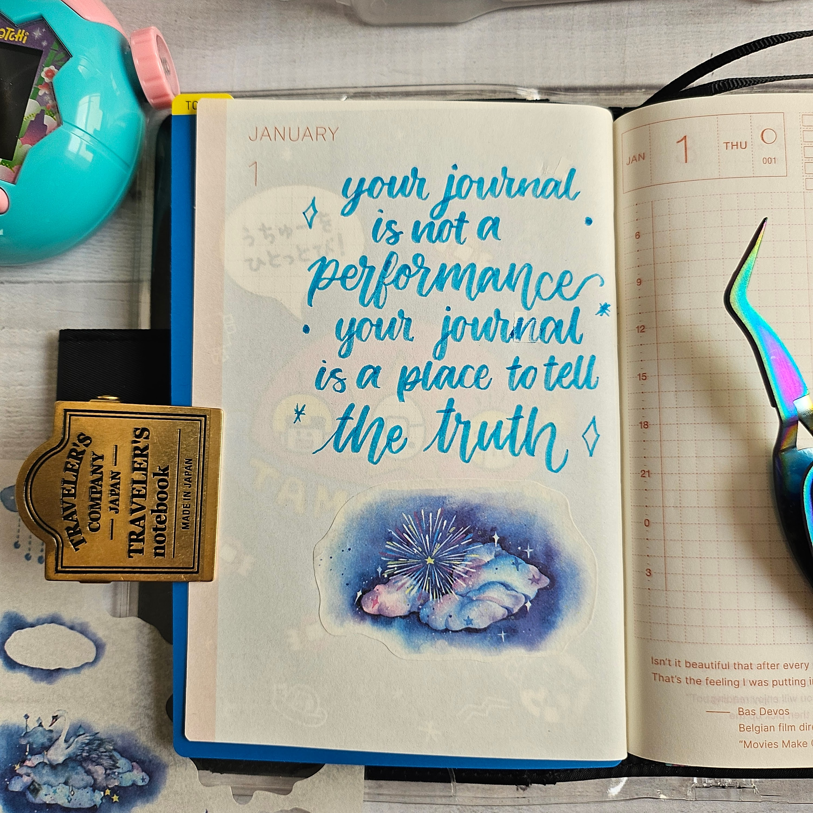
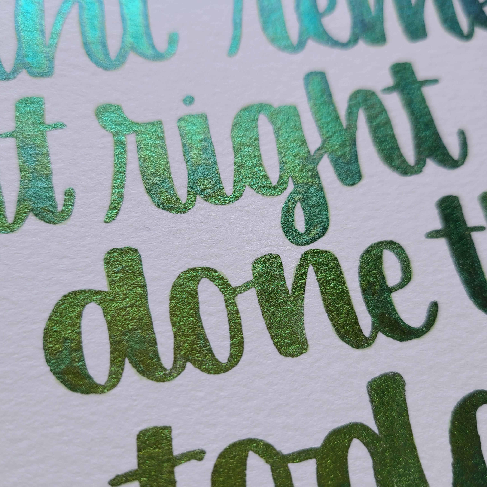
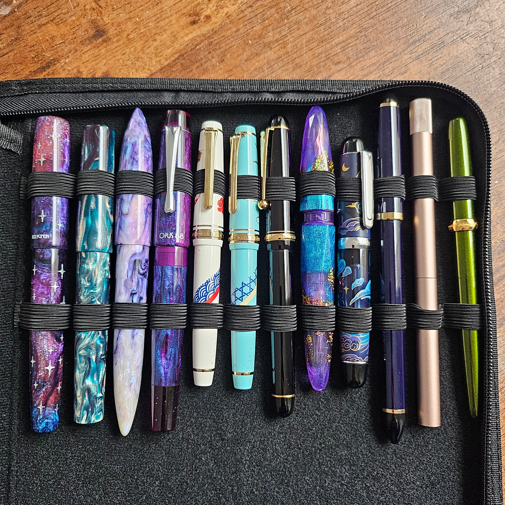
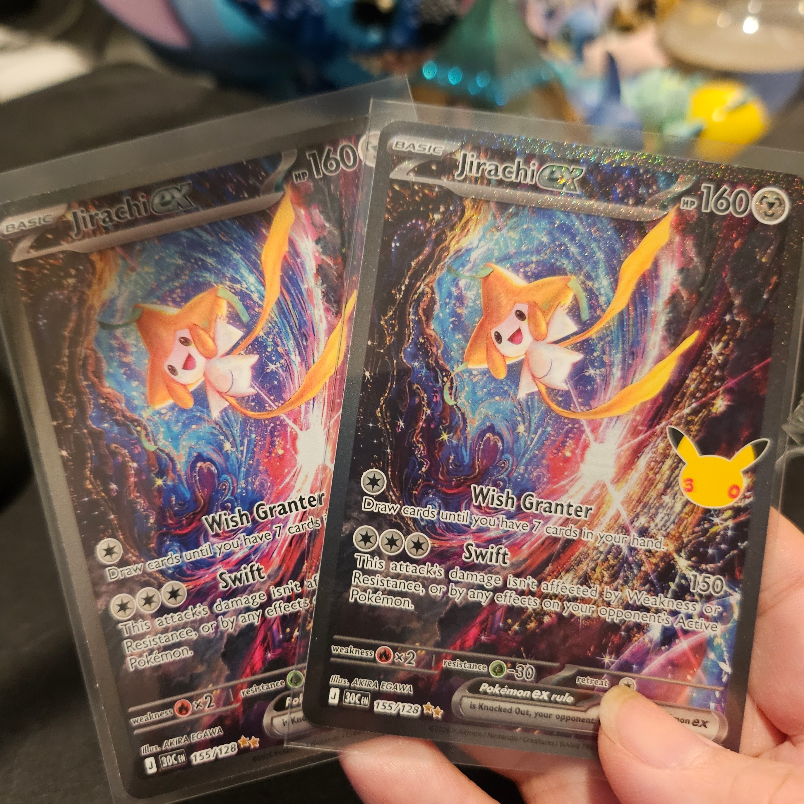

Fallon H.
About me
I currently live in NY and I have two kids. I am in the Full stack bootcamp because I am interested in pivoting with my career.
Journaling

I journal every day. Usually in the mornings where I just write whatever comes to mind. It helps with clearing my mind to get ready for the day. Some people drink coffee to wake up, I write instead.
Calligraphy

I am self taught and I know a variety of calligraphy hands. I know how to write copperplate, modern dip calligraphy and brush calligraphy.
Fountain pens

I also collect fountain pens. The picture above shows some of my collection but I definitely have more than 50 pens at this point.
Pokemon Cards

I also collect pokemon cards. I have a variety of vintage and modern. Right now I am master setting all Ho-ohs! If you know my last name, you know why.